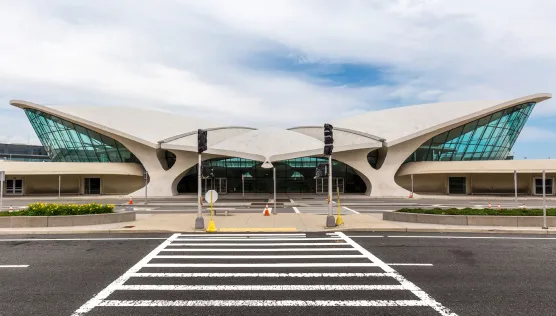
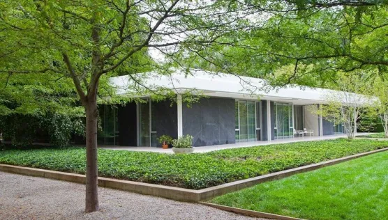

Les Œuvres Majeures d'Eero Saarinen
Découvrez les réalisations emblématiques qui ont solidifié la réputation d'Eero Saarinen en tant qu'architecte visionnaire et innovateur. Chacune de ses œuvres incarne une fusion unique entre fonctionnalité, esthétique et audace architecturale.
Terminal TWA, Aéroport international John F. Kennedy New York, États-Unis
Le Terminal TWA à l'aéroport JFK reste un symbole de l'ingéniosité de Saarinen, combinant forme et fonction pour créer une structure aérienne emblématique.
Gateway Arch - St. Louis, Missouri États-Unis

Cette structure emblématique en forme d'arche, empreinte d'une élégance monumentale, est devenue un repère iconique de la ville de St. Louis.
Miller House and Garden Columbus Indiana, États-Unis
Saarinen a conçu cette résidence privée comme une harmonie parfaite entre l'intérieur et l'extérieur, avec des lignes épurées et une intégration intelligente avec le paysage environnant.
Ingalls Rink - Université Yale, New Haven, Connecticut, États-Unis

Ce complexe sportif présente des courbes fluides qui s'intègrent harmonieusement dans le campus de l'Université Yale, illustrant l'approche artistique et fonctionnelle de Saarinen.
Kresge Auditorium - Cambridge Massachusetts, États-Unis
Ce lieu de rassemblement architectural remarquable se distingue par ses formes uniques et sa symbiose avec son environnement universitaire.
Dulles International Airport - Chantilly, Virginie, États-Unis

L'aéroport de Dulles illustre la capacité de Saarinen à repousser les limites conventionnelles de la conception aéroportuaire avec son design novateur.
Bell Labs Holmdel Complex - Holmdel, New Jersey, États-Unis
Ce complexe architectural met en valeur l'approche distinctive de Saarinen, alliant forme artistique et fonctionnalité structurelle.
North Christian Church - Columbus Indiana, États-Unis

L'église North Christian incarne l'esthétique unique de Saarinen, avec ses lignes audacieuses et sa structure inspirante.